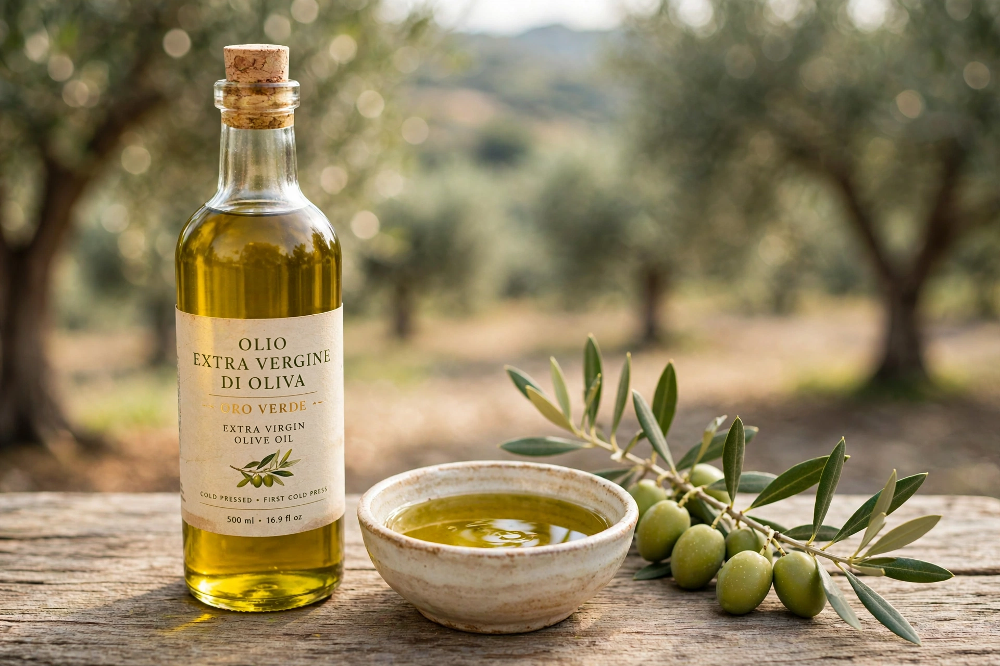

Olive oil
Olive oil is a liquid fat obtained by pressing whole olives, the fruit of Olea europaea, the olive tree of the Mediterranean Basin. It has been produced for at least 6,000 years — among the oldest known vegetable oils — and was central to ancient Mediterranean life: food, lamp fuel, soap, medicine, ritual anointing and athletic unguent. The olive branch became the symbol of peace (Athena's gift to Athens; the dove of Genesis), and olive oil remains the defining fat of Mediterranean cuisine and the centrepiece of the "Mediterranean diet" studied for cardiovascular benefits.

Production and grades
Spain is the world's largest producer (Andalusia alone, around Jaén, grows millions of trees), followed by Italy, Greece and Tunisia; Greece has the highest per-capita consumption. Olives are harvested in autumn, crushed (traditionally by stone mills, now by steel crushers) and the oil separated by pressing or centrifugation. The top grade, extra virgin olive oil, is mechanically extracted without heat or chemicals and must meet strict chemical (free acidity ≤ 0.8%) and taste standards — fruity, bitter and pungent from polyphenols — while "pure" and "light" grades are refined blends. High global prices in 2023–24, after drought slashed the Spanish harvest, revived the oil's perennial problems: adulteration and mislabelling (olive-oil fraud is documented since antiquity, and organised crime's "agromafia" profits from it), and substitution by seed oils. Stored cool and dark, good oil is a fresh fruit juice; rancidity is its enemy.